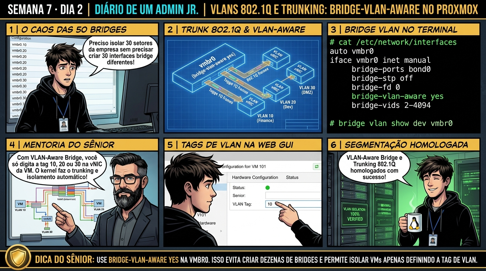

DIARIO DE UM ADMIN JR. | PROXMOX VE & PBS — DA BASE AO CLUSTER
🔗 Conecta com o Dia 1: Ontem você construiu o uplink físico com Bonds e Bridges. Hoje você aprende a segmentar redes corporativas: utilizando o padrão IEEE 802.1Q e configurando Linux Bridges com bridge-vlan-aware yes, eliminando a necessidade de criar dezenas de bridges separadas para cada VLAN.
🔓 Privilégio de hoje: Segmentação de Tráfego L2 e Trunking 802.1Q. Você projeta bridges VLAN-Aware e isola redes de VMs com tags de VLAN.
Semana 7 · Dia 2 | Nível Júnior — Redes Avançadas, SDN & Firewall
VLANs 802.1Q e Trunking: VLAN-Aware Bridges no Proxmox
Segmentando tráfego de Produção, DMZ e Gestão com uma única bridge inteligente
ANTES DE ALTERAR, OBSERVE. DEPOIS DE ALTERAR, VALIDE.

1. O chamado
Você recebeu o chamado #7002: 'A infraestrutura corporativa possui 4 redes isoladas: VLAN 10 (Gerência), VLAN 20 (Produção), VLAN 30 (DMZ Web) e VLAN 40 (Storage iSCSI). O administrador anterior criou 4 bridges separadas (vmbr10, vmbr20, vmbr30, vmbr40), gerando um arquivo de configuração confuso e propenso a erros. O chamado exige: (1) Migrar a infraestrutura para uma única Bridge VLAN-Aware (vmbr0); (2) Configurar a porta do switch físico em modo Trunk 802.1Q; (3) Atribuir a VLAN Tag diretamente no hardware de rede da VM; e (4) Validar o isolamento estrito entre a DMZ e a Gerência.'
💡 Passa o mouse nas palavras destacadas pra ver uma dica rápida — clica se quiser a explicação completa com analogia.
2. O sênior te conta
🧑🏫 antes dos termos técnicos, a história de hoje
Hoje o time de redes precisava segmentar o tráfego do Proxmox em 10 VLANs diferentes (VLAN 10 para finanças, VLAN 20 para DMZ, VLAN 30 para bancos de dados). O Júnior começou a editar o /etc/network/interfaces criando 10 bridges separadas (vmbr0.10, vmbr0.20, vmbr0.30), gerando um arquivo gigantesco e confuso.
Parei ele na hora: 'Você não precisa criar 50 bridges virtuais pra usar VLANs!'. Apresentei a diretiva mágica bridge-vlan-aware yes. Expliquei que com uma única bridge VLAN-Aware, a vmbr0 se comporta exatamente como um switch gerenciável com suporte a trunking 802.1Q.
Ativamos a opção com ifreload -a e bastou colocar a tag tag=20 diretamente na placa de rede da VM para ela entrar na sub-rede isolada instantaneamente. O Júnior limpou a configuração e aprendeu a usar VLANs como os arquitetos de rede trabalham.
3. Decodificador de conceitos
Clica em qualquer termo pra ver a definição completa e uma analogia do dia a dia:
4. Ferramentas e leitura da evidência
Comando / Parâmetro
O que observar e por que importa
qm set 100 --net0 virtio,bridge=vmbr0,tag=20
Atribui a placa de rede da VM 100 à VLAN 20 de produção com isolamento nativo.
bridge vlan show
Exibe a tabela de filtragem de VLANs de todas as interfaces e portas conectadas à bridge.
tcpdump -i vmbr0 -e -n vlan
Captura frames Ethernet na bridge filtrando apenas pacotes contendo cabeçalho 802.1Q com tags.
ip link add link vmbr0 name vmbr0.10 type vlan id 10
Criação manual de interface L3 de VLAN para o host.
# 1. Configuração da Bridge VLAN-Aware em /etc/network/interfaces
auto vmbr0
iface vmbr0 inet static
address 192.168.10.50/24
gateway 192.168.10.1
bridge-ports bond0
bridge-stp off
bridge-fd 0
bridge-vlan-aware yes
bridge-vids 10 20 30 40
# Interface de Gerência dedicada na VLAN 10 (opcional L3 no host)
auto vmbr0.10
iface vmbr0.10 inet static
address 10.10.10.50/24
# 2. Atribuição de VLAN Tags em VMs via CLI
$ qm set 100 --net0 virtio=00:11:22:33:44:55,bridge=vmbr0,tag=20 # Produção
$ qm set 101 --net0 virtio=00:11:22:33:44:66,bridge=vmbr0,tag=30 # DMZ Web
# 3. Auditoria da Tabela de Filtragem de VLANs (bridge vlan)
$ bridge vlan show
port vlan ids
bond0 10 20 30 40
tap100i0 20 PVID Egress Untagged
tap101i0 30 PVID Egress Untagged
vmbr0 10 20 30 40
5. Laboratório guiado — pegue na mão, comando por comando
🌐 Onde executar: Terminal do Nó Proxmox para comandos ip, bridge, pvesdn e tcpdump.
Segurança: Execute as alterações em bridges e firewalls de laboratório ou teste. Não altere parâmetros de redes de produção sem janela homologada.
Ação: Ative a diretiva bridge-vlan-aware yes na configuração da bridge principal vmbr0.
sed -i '/iface vmbr0 inet/a bridge-vlan-aware yes' /etc/network/interfaces
Resultado esperado: Bridge reconfigurada para modo VLAN-Aware.
Por que fizemos isso: Ativar bridge-vlan-aware yes na vmbr0 transforma a bridge em um switch virtual com suporte nativo a trunking de VLANs 802.1Q.
Cilada comum: Criar dezenas de bridges separadas (vmbr0.10, vmbr0.20) para cada rede, poluindo o arquivo de interfaces e dificultando a manutenção.
Ação: Aplique a configuração de VLAN-Aware a quente com o utilitário ifreload.
ifreload -a
Resultado esperado: Tag 30 aplicada na interface virtual tap101i0.
Por que fizemos isso: Definir a tag de VLAN (ex: tag=10) diretamente na interface de rede da VM isola o tráfego da máquina na sub-rede desejada em milissegundos.
Cilada comum: Esquecer de configurar a VLAN na placa de rede da VM, permitindo que ela acesse acidentalmente a rede de gerenciamento do hypervisor.
Ação: Configure a tag de VLAN (tag=20) diretamente na interface virtual de uma VM.
qm set 100 --net0 virtio,bridge=vmbr0,tag=20
Resultado esperado: Visualização da regra PVID 30 Egress Untagged na porta da VM.
Por que fizemos isso: O comando bridge vlan show exibe a tabela de mapeamento de portas e VLANs ativas em cada interface virtual do Proxmox.
Cilada comum: Achar que o Proxmox faz roteamento entre VLANs sozinho sem um roteador ou firewall de Camada 3 configurado no gateway.
Ação: Audite a tabela de mapeamento de portas e tags 802.1Q com bridge vlan show.
bridge vlan show
Resultado esperado: Isolamento de broadcast e comunicação comprovado.
Por que fizemos isso: Validar a comunicação com ping entre VMs na mesma VLAN e a recusa entre VLANs diferentes comprova a segurança da segmentação.
Cilada comum: Liberar o tráfego entre todas as VLANs no roteador sem regras de firewall, anulando a segurança do isolamento de redes.
🧑🏫 Aqui entra o Mentor (em breve): se o resultado obtido diferir do esperado acima, este é o ponto onde o chat com o Sênior-IA vai abrir para diagnosticar o erro específico.
Ação: Valide a segmentação e isolamento de pacotes entre VLANs distintas.
# Trunking 802.1Q e Bridge VLAN-Aware homologados.
Resultado esperado: Topologia migrada de 4 bridges para 1 bridge VLAN-Aware.
Por que fizemos isso: Documentar a tabela de VLANs e sub-redes no inventário garante governança e organização das redes do datacenter.
Cilada comum: Usar VLANs aleatórias sem registrar a finalidade de cada tag na documentação oficial da empresa.
6. Antes de ver as opções — tenta responder
🧠 Recall ativo: Qual é a grande vantagem arquitetural de usar uma bridge 'VLAN-Aware' no Proxmox VE em vez de criar uma bridge tradicional separada para cada VLAN (vmbr0.10, vmbr0.20)?
A bridge **VLAN-Aware** opera como um Switch Gerenciável L2 de alta capacidade em software. Você precisa de apenas UMA única bridge (`vmbr0`) configurada com `bridge-vlan-aware yes`. As portas de rede das VMs conectam-se todas na `vmbr0` e você define a VLAN diretamente na interface gráfica ou CLI da VM (campo `tag=20`), sem poluir o `/etc/network/interfaces` do host e permitindo adicionar centenas de VLANs instantaneamente sem reiniciar a rede do host.
QUESTÃO 1 de 3
7. Questão comentada — clica numa alternativa
Qual é a declaração correta para transformar a bridge vmbr0 em VLAN-Aware no arquivo /etc/network/interfaces?
💡 Analogia do Sênior para Fixar: Na arquitetura do Proxmox sobre VLANs 802.1Q e Trunking: VLAN-Aware Bridges no Proxmox: O KVM/QEMU opera como o motorista dedicado de cada passageiro, alocando recursos virtuais em contato direto com o kernel.
QUESTÃO 2 de 3 — cenário de erro real
7.1 A VM na VLAN 30 consegue pingar o Gateway da VLAN 20?
O técnico colocou a VM 101 na VLAN 30 (DMZ) e configurou o IP 192.168.20.99 (que pertence à VLAN 20) dentro da VM:
[VM 101 - DMZ] ping 192.168.20.1
From 192.168.20.99 icmp_seq=1 Destination Host Unreachable
(Isolamento L2 perfeito: a bridge descarta o tráfego pois a VM está tagueada na VLAN 30 e o roteador espera a VLAN 20)
Por que a tentativa de comunicação entre VLANs diferentes falha na camada 2?
💡 Analogia do Sênior para Fixar: Ao diagnosticar problemas em VLANs 802.1Q e Trunking: VLAN-Aware Bridges no Proxmox: É como inspecionar as conexões do storage e o barramento PCIe antes de declarar falha de software.
QUESTÃO 3 de 3 — detalhe que confunde todo iniciante
7.2 O que significa 'PVID Egress Untagged' na tabela do bridge vlan show?
Um estudante vê a linha 'tap100i0 20 PVID Egress Untagged' e pergunta o que isso faz na prática:
Qual é a função do PVID e Egress Untagged para a máquina virtual?
💡 Analogia do Sênior para Fixar: A governança e resiliência em VLANs 802.1Q e Trunking: VLAN-Aware Bridges no Proxmox: Funciona como a política de contenção e redundância do datacenter, garantindo que o cluster nunca perca quorum.
8. Procedimento profissional
Habilite o modo VLAN-Aware na bridge principal editando o arquivo /etc/network/interfaces.
Adicione as diretivas bridge-vlan-aware yes e bridge-vids 1-4094 na vmbr0.
Aplique a alteração a quente com ifreload -a sem derrubar as VMs ativas.
No hardware de rede de cada VM/Container, preencha o campo VLAN Tag com o ID da rede desejada (ex: 10, 20, 30).
Valide a segregação inspecionando a tabela de encaminhamento com bridge vlan show.
Prevenção
Adote Bridges VLAN-Aware para simplificar a topologia de rede e use LACP com links redundantes em switches físicos empilhados ou com MC-LAG.
9. Validação e encerramento
Você compreende o funcionamento do padrão IEEE 802.1Q e cabeçalhos de VLAN.
Você domina a configuração de bridges VLAN-Aware e portas de acesso/trunk no Proxmox VE.
Você sabe como garantir isolamento L2 rígido entre redes de DMZ, Produção e Gerência.
A arquitetura de segmentação de redes foi homologada com excelência.
Rollback e limites
Para remover a tag de uma VM e retorná-la à rede não-tagueada padrão, execute qm set ID --net0 virtio,bridge=vmbr0 (sem o parâmetro tag).
💡 Sobre repetição espaçada: A construção de Redes Definidas por Software (SDN), VNETs e túneis VXLAN será o tema de amanhã no Dia 3.
10. Resposta final
Alternativa correta: B. A resposta correta é a B: a diretiva bridge-vlan-aware yes com bridge-vids ativa o motor de filtragem 802.1Q nativo na bridge vmbr0.
🔓 O que você desbloqueou hoje
VLANs 802.1Q e VLAN-Aware bridges dominadas com perfeição! Amanhã, no Dia 3, você aprenderá como funciona o Software-Defined Networking (SDN) no Proxmox VE: criando Zonas, VNETs e túneis VXLAN para interligar VMs em camada 2 através de redes roteadas em camada 3 sem depender de switches físicos.